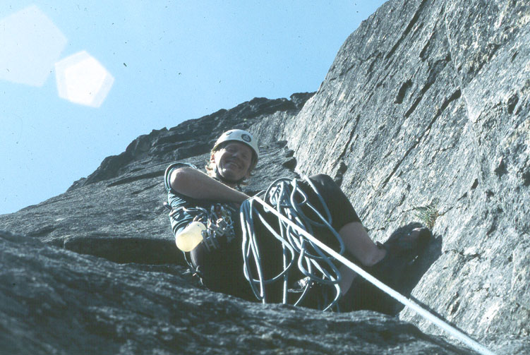
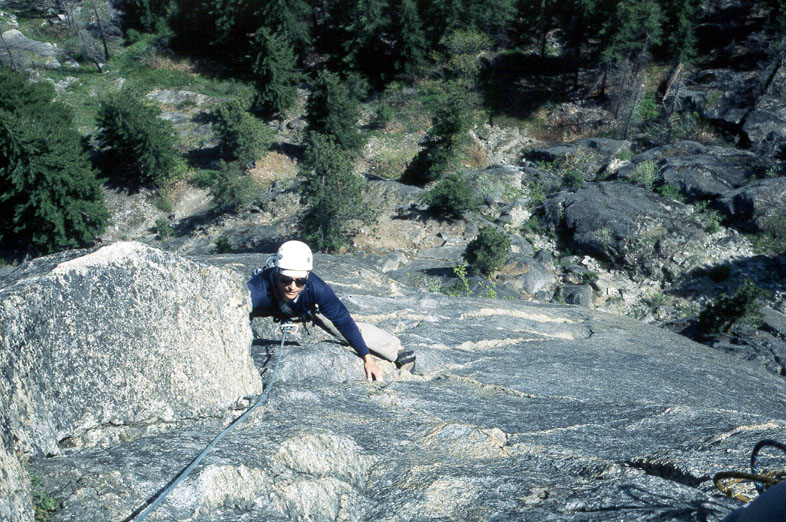
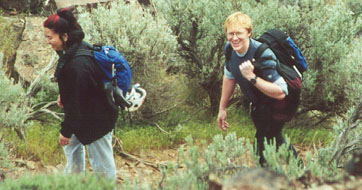
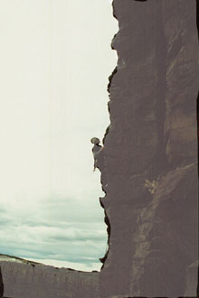
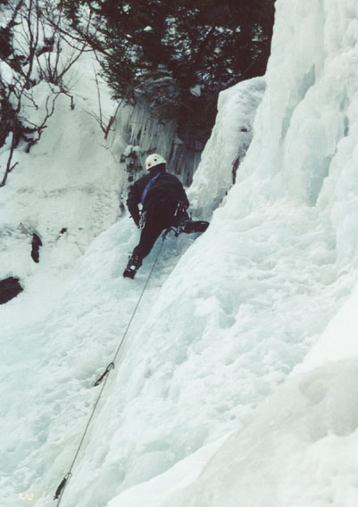

Short Trips 2001
Alpental Parking Lot, 12/21/2001}
Alex, Peter, Kim and I snowshoed from the parking lot towards Source Lake. We came back shortly before the lake, and practiced ice climbing on the parking lot walls. Pretty fun!
Mt. Catherine, 12/16/2001}
I returned on skis two days later. It was pouring rain, but I was there, so I decided to skin up along roads and ski runs to the right of our previous route. First I skied up and down the kiddie lift to try and get back in practice. I’m a terrible skier! Anyway, I continued up, finally reaching “Grand Junction.” I went into the hut, soaking wet, and decided the best way to get warm was to go home! Skiing down was exciting and quick! Rain, rain, rain…
Mt. Catherine, 12/14/2001}
Peter and I tried to hike up Mt. Catherine at Snoqualmie Pass. Deep, powdery snow slowed our progress. We broke trail up a Hyak ski lift, then went down steep slopes on the other side in incredible wind and spindrift. I thought we were on Mt. Washington in New Hampshire for a moment! We crossed a creek and climbed 500 feet up slopes on the shoulder of the mountain. With avalanche danger pretty high, we didn’t want to get on anything steep, so we turned around. For fun, we built a snow shelter in a tree well. As we snowshoed down, the sun came out and the air was crystal clear.
Mailbox Peak, 12/7/2001}
Peter and I squelched up the muddy trail early this morning. But the stars and moon were out - did we make the Friday weather window? First time on this very steep trail which reminded us of the steep, forested Eldorado Creek trail. Encountered snow, finally wanting snowshoes near the crest of the long slope from the ground. Still, deep snow made the trudge to the boulder-field difficult, but then a frozen crust made life easier getting to the summit. We chanted from Green Eggs and Ham, knocking a foot-wide sheet of rime ice off the mailbox to get in. Even blades of grass were plastered with thick carapaces of ice - must have been ugly up here! Crisp, clear air, with views to Rainier and Baker. Even the Haystack was plastered in white. Good snow brought us down in 1.5 hours, no other souls.
Granite Mountain hike, 11/9/2001}
Peter, Alex and I got an early morning start for a before work hike. We had a few problems, including a alarm clock mishap, a closed exit ramp, a pre-dawn traffic jam. But once past this, we were walking happily on the trail. Discussing various things, we got our exercise and marched up the slope. Coming to a broad gully, we opted to travel straight up the winter route, using game trails and big slabby boulders for progress. Wir spricht nur Deutsch. “Pytor! Wir sind fast hoehe, fast da!” said Alex. Gaining the ridge crest, we found several feet of snow. Peter and I took the bouldery crest, Alex dropped into a basin and up another way. Standing on the lookout tower, we admired the sunny views of Rainier, Garfield and Kaleetan. The way down felt long, but it was a fun morning.
McClellan’s Butte hike, 10/28/2001}
Trying out my new Black Diamond Ice Pack (I love this thing), I hiked up McClellan’s Butte, a really pretty summit on the I-90 corridor. The trail is good, but annoyingly, crosses three roads. I listened to the radio as the steep trail led into increasing snow. I followed day-old tracks to Windy Corner, where a bone-chilling wind accompanied the view to Chester Morris Lake. From here, snow depth increased, and became about 15 inches deep after the frozen pond. The summit block was tricky, because of snow and ice over the rocks. But the sky was blue, streaked with white. The view from this pointy summit stretched from Mt. Rainier up to Mt. Baker, with many craggy peaks in between. This was my second trip up there.
Frenchman’s Coulee Climbing, 10/21/2001}
Chris K., Jeff Witt, Peter, Kim and I arrived at the Feathers in spitting rain. We did several routes here: the steep 5.8 (which now has graffiti on it, damn!), all the easy routes, even a chopped 5.9 route on top-rope, done after Chris and I climbed a “unknown” corner we’d rate about 5.7. I climbed another “unknown” route at 5.4, loose. Then Peter and I climbed the north side of Agaltha Tower in two exciting pitches. There were some fun 5.7 moves near the top on a steep red wall. Then the sun came out, so we went to the Sunshine Wall. I followed on Tangled up in Blue, a difficult (for me) 5.9 crack. Then had a slightly easier time on George and Martha (5.10a), a really exciting route. I fell on the off-width near the top, then got it right. Chris and I finished at dusk on Throbbing Gristle, a bolted 5.9 arete. Kim climbed 7 Virgins and a Mule for the first time. A really nice time for us all.
Index Climbing, 9/22/2001}
Peter, Kris and I planned to climb at Static Point, but on discovering that the road was closed due to potential terror attacks on the reservoir, we diverted our plans to Index. Peter has never climbed Great Northern Slab, so the three of us did this. Peter also got in a top-rope of the excellent 5.6 hand crack on Pisces. There was a famous female climber sharing our belay, but I forgot her name. Fun, relaxing afternoon.
Exit 38, 9/02/2001}
Kris and I went for a fun afternoon of climbing here. We did several routes around the trestle/we-did-rock area. Kris climbed the 5.9 route on We-Did-Rock, big congratulations to her! We enjoyed the evening when the place emptied out.
Leavenworth, 7/28/2001}
Kris and I took my sister Tamara for her first rock climbing outside. We went to Mountaineer’s Buttress and climbed three fun pitches. Tamara did really well, only finding the second pitch a little harder than she would have liked. I made a point of leaving cams at home and bringing hexes, which proved to be very trustworthy (I’ve avoided hexes until now). We had dinner at a German food restuarant with our friend Christos, who just happened to be strolling by.
Static Point, 7/21/2001}
I had to introduce Kris to granite slab climbing, so I dragged her up the trail to the rock. We met a really nice dog named Pete, who needed rescuing from a high ledge he had scrambled to. He was so happy to be back on solid ground. Kris did a great job, but three pitches were enough for us today. We climbed Offline, and I was once again amazed at the runouts required to do this climb! This was a fun afternoon trip.
Lake Serene, 7/14/2001}
Fresh back from Italy, I had lots of energy to do something. I took a few hours in the middle of the day to visit the lake, and I wanted to try the old trail. I found it pretty quickly, it is just up from the upper falls lookout. It is a boot beaten path that goes steeply up (no switchbacks), using tree roots for aid. I don’t think I saved much time on the way up, as I had to work to keep the trail sometimes, but on the way down, I made it from the lake to the falls in 20 minutes! It was a long controlled fall…I also scoped out the approach for a climb I’d like to do here.
Great Northern Slab, 6/21/2001}
Kris and I brought my Mom to Index to see what climbing is about. I actually let her belay me on the short first pitch of Libra Crack, a 5.8 offwidth that gets tricky at the end. Then Kris and I did the usual three pitches of the slab, just to practice for Italy.
Leavenworth Climbing, 6/9-10/2001}
Kris, Kim, Peter and I drove out and got on the R & D Route. We had a good time, but had to work through considerable crowding on the route. There was quite a bottleneck, and one party had cut the second pitch in half. We were able to pass them there. Kris had a hard time on the last pitch because she fell right off the belay and felt a little sketched after that. We had a great dinner and a visit to the motel hot tub. The next day, Peter and I top-roped April Mayhem (5.9), and I climbed it easily. This was great because previous attempts had spit me off. Peter found the crack pretty hard, but easily climbed the upper thin face. Then we started hiking to Bean Creek Basin, but Kim injured her knee at a creek crossing. We were happy to get back to the trailhead with no problems! She is recovering quickly. Then Kris and I hiked up Little Si. Kris amazed me by hiking with great speed and confidence, I was impressed! I took the scramble variation directly above the first climbing area. This is a great scramble with some exposed 4th class climbing mixed with very steep trail. Car to car was 2:15, a new record for Kris.
Mount Pilchuck 06/07/2001}
We got home at about 10:00 pm, and I had this urge to hike, so I took off for the granite slopes of Mount Pilchuck. I knew it would be a clear night, and there was a moon, so it was an ideal time. I encountered snow at the boulderfield and had a great time looking at the lights of the city below. I was on top at 12:30 am, taking an hour and 15 minutes up. The lookout door was open, so I remembered to close it when I left. What a cool museum they have in there. Thanks to the Everett Mountaineers for that. Many fun standing glissades in the moonlight on the way down. And hey, I was home by 2:30 am!
Ingall’s Creek 05/27/2001}
Kris and I hiked about 6 miles up Ingall’s Creek. We aren’t sure if we passed “Falls Creek Camp,” or came close to it, as that was our turnaround location. We had high clouds to keep the temperature down. This was a great hike, although Kris got a blister :(.
Teanaway Ridge/Iron Bear, 05/26/2001}
Kris and I enjoyed this hike despite extreme heat in the middle of the day. Excellent views of Mt. Stuart and ridges leading to it.
Smith Rocks, 05/19-20/2001}
Kris and I got a very late start for the drive on Saturday, and only climbed 2 pitches of Super Slab that evening. The next day Steve and I climbed Sky Ridge, a beautiful climb. Then Steve, Sarah, Kris and I climbed Cinnamon Slab. After this we hiked around, and headed home. A fun trip despite the small amount of climbing!
Snow Creek Wall, Orbit, 05/12/2001}
Steve and I did this excellent climb. We were behind another Steve and his friend, and it was kind of awkward because they offered to let us pass, but for some reason we didn’t. Then later, I was feeling pretty dehydrated sitting at a belay, so I asked if we could take them up on the offer. They obliged, but unfortunately, it was at an awkward location, just after the crux pitch. I hadn’t led that pitch before, and it took longer than I thought. So I think we made them wait for us for 20 minutes. Sorry about that guys! I led all the pitches so Steve could see what a 5.8 trad route like this was like. The crack pitch was harder than when I followed Dan a few weeks before! Steve (from 2nd party) very kindly sent me a few slides.


Little Si (Kris), 05/13/2001}
She had such fun the day before, she did it again. She met some hikers who had travelled in Italy, and had a great time.
Little Si (Kris), 05/12/2001}
Kris hiked up and met Bob and Brian for an exchange of climbing shoes. She enjoyed an apple on the summit, and others were envious!
Static Point: Offline, 05/06/2001}
A surprise call from Alex began this pleasant trip. He and Summer picked me up at home, and we were off to climb Online (5.10b, 6 pitches) at Static Point, a hidden granite slab in the Sultan Basin. We walked up the road and turned left up a boot-beaten trail into a beautiful forest. We hiked about 800 feet up to the base of the slab. A party of four was climbing Online, and for the next hour we wavered between climbing Offline and hoping they would hurry. But they had one leader and climbed one at a time, so that wasn’t happening. Luckily, Alex brought a rack suited to Offline (5.10a, same length as Online, and 20 feetright), which has more natural protection. He led a loose and dirty first pitch, then traversed to the second pitch belay anchor of Online (we were still hopeful). Alex belayed Summer and I up at the same time with the most excellent Kong Gi-Gi, which allows the two followers to climb together, and the leader to belay hands free. We wondered what to do, finally deciding to continue Offline. I climbed a diagonal pitch up easy ramps then to pleasant friction and the belay. We swapped leads, making excellent time with double ropes. The views improved and the climbing got trickier. The runouts between bolts were long, but nicely the bolts were clustered at difficult sections. Most pitches had two or three bolts, and one or two cam placements. At the top we admired the surrounding peaks. Mt. Stickney looked great and Crested Butte was inspiring and jagged. The rappels were quick and easy. As we hiked down,the party of four were finishing their climb.
Frenchman’s Coulee, 04/29/2001}


Kris and I, Bob and Brian headed to Vantage, discouraged by rain forecasted for the Leavenworth area. Bob drove, and we spent about 30 minutes driving around Ellensberg for a parking pass. Finally, we got one, which is a good idea, because you’ll get a ticket if you don’t. I think it cost $12. We hiked to the Sunshine Wall, and I was gunning for a lead of “Ride ‘em Cowboy.” Not realizing how tired I was from the previous day in Leavenworth, I got about halfway and had to hang on the rope when my right arm burned out. I got past this crux, and came to another shortly below the anchors. Back on the rope. Boy, I felt silly! Finally, I figured out the moves, and reached the anchor. Not a great start! Better to get on something easier…
Bob and Brian did this climb, then Brian and I headed over to do a trad route. Brian wanted to get some practice cleaning gear, and I thought 7 Virgins and a Mule would be a good lead for him, since it protects very well. But several people were on the route, and drinking beer at the belay! We found a route called “Stokin the Chicken,” rated 5.6, which had some chimney and crack climbing. From the belay, the climbing was easy, but only protected with larger cams. Halfway up, I had placed three of them, and was getting worried. I moved carefully to a chockstone, and was able to sling it from an awkward stance. As soon as I clipped the rope to it I had doubts about it’s safety! You know how Vantage is, with loose rock…Anyway, I manteled onto the chockstone and considered my options. It looked unprotectable. I could follow a wide fist crack left, or go into a chimney with blank walls on the right. I had one 2.5 inch cam left. Stemming out of the chimney, I climbed up and left on small foot smears, and placed the cam. A very bad placement, as it was too small. I moved right back into the chimney to consider my options,and was greeted with a most welcome sight: a solid finger crack! Yes! I placed a solid nut, went back out and removed the bad cam at the same level, then moved up the finger crack. My back was on the opposite wall of the chimney, and now began an exhausting thrutch (at least the hands were good in the crack). Knees abraiding, feet smearing, I wondered how anyone could think this route was 5.6? I placed a small cam, and was soon near the exit. One more piece protected the final moves, and I was above the chimney in strong wind, crossing to a fixed sling around a column to belay on. Whew! What a climb…
I belayed Brian up, and it was fun to watch how differently he did some things. Brian is a really strong climber, and he made do with crimpy face holds rather than the obvious crack. In the knee grinding chimney, he faced the other way, reaching back over his shoulder to clean the pro! He came up quickly and we rappelled from an anchor on a different climb. I didn’t care too much for the sling draped around my belay column.
Next was 7 Virgins and a Mule. I led this delightful climb, hauled the packs, then Brian came up. This way we could walk off from the rim. Hauling the packs was funny, because I used my belay device and did this very slowly. Finally, I lost patience and hauled hand-over-hand, much quicker! Brian will be ready to lead this route next time.
Meanwhile, Kris and Bob had climbed at the Feathers, not feeling too ambitious. Bob was getting over a cold, and Kris was content with some old favorites. We had a great dinner at a yellow church in Ellensberg.
Leavenworth Climbing, 04/15/2001}
Kris and I drove to Leavenworth for some climbing. First we did Martian Diagonal on Martian Slab at the Peshastin Pinnacles. This route is pretty fun if friction slabs are your thing. The rating is about 5.5, and we climbed it as 4 short pitches. By running the rope out, you might be able to do it in two, but it was more fun to keep an eye on Kris as she grappled with the rock. Not used to friction, she found some of it pretty hard, but I think she’s more used to it now. You either get a little pebble embedded in the rock to grab here, or you get nothing! The scenery is great on this route.
After this, we ate, then Kris belayed me on Dogleg Crack(5.8+), a three star crack route in Icicle Canyon. I decided to lead it. Wow, it was really, really hard! I actually took my first leader fall on gear, a trusty orange Metolius cam. Getting established in the crack was the most difficult part, and the severe rightward lean made climbing very awkward. I laybacked a section delicately, and finally got established in the crack. The route eased up for a while, then there was a difficult transition left, and a short traverse to the anchors. I want to go back and work on this climb some more.
We finished the day with a visit to our old friend Mountaineer’s Dome. Everyone had left,and we spent two nice evening hours climbing three pitches. This was Kris’s reward for persevering on some new terrain at Peshastin! It was really fun for us both, and she hollered that I was such a liar, because I thought it was only two pitches. I prefer to think of it as creative memory retention! :) Both a little sore, we picked our way down the boulderfields back to the car.
Little Si, 03/31/2001}
Kris and I went hiking here in the late afternoon. First we drove on the Middle Fork Snoqualmie River Road for a while and saw Mt. Garfield and we looked for the Mailbox Peak trailhead. Then we did the hike. Kris did an excellent job on the steep trail for her first hiking in a while, and together we stood on the summit as evening approached. I really like scrambling around the summit rocks, but we had to get going before darkness came. One section of the forest was alarmingly dark on the way out. We got a coke and drove home, happy with our exercise.
Frenchman’s Coulee, 03/25/2001}
Kris and I were taking our enthusiastic friend Christos for some easy outdoor rockclimbing. But weather had deteriorated, and Kris decided to stay home rather than climb in the rain. We reasoned that the dinner plate holds of the Coulee would be pretty good even if wet, so we took off for the desert. Christos learned how to belay, climb and lower off at the Feathers on some old standby routes. I belayed him up on one so we could sit on the ridge crest together. At this point, rain turned to hail, and we quickly came down. A hike down to the Columbia River was fun to do. Later, we came back to the rock and I climbed 7 Virgins and a Mule, then we both did Peaceful Warrior. Just a weekend of easy old favorites, ah.
Great Northern Slab, Index, 03/24/2001}
After spending most of the day at a European travel seminar, I had a few hours to kill before darkness. On this so-fine day, I couldn’t just stay inside. I left a sleepy Kris on the couch and was soon soloing the first pitch of Great Northern Slab, an old favorite. I set up a belay for the spectacular twin-crack pitch, then climbed, using a clove-hitch for a belay. I took the easy way around the awkward start, then climbed the pitch slowly. It really takes a lot of time to adjust the clove hitch every two moves, I should have given myself a bit more slack. At the top, I rappelled the route and reclimbed it, this time doing the awkward start. What fun in the evening sun! I never saw any other climbers on the wall. I gazed at Mt. Index as the sun began to set, then rappelled two pitches and drove home. An excellent 2 hours on the rock (4:30 - 6:30 pm).
Alpental Ice Climbing, 03/07/2001}
Peter and I came back, needing to get in one more climb of this thing before it fell apart due to the recent warm temperatures. Peter led up onto the ice, choosing a leftward traverse into a snow gully coming down from the anchor. This steep, rotten snow slope provided some adventure, since any tool placements were marginal at best. I top-roped the climb, then moved the anchor 20 feet higher to another tree with a fixed sling. This gave about 10 more feet of ice climbing. We each climbed it again, then headed down. We had to trade crampons back and forth and make due with 2 ice screws since Peter brought Kim’s crampons by mistake! This didn’t hamper us a bit though!
Alpental Ice Climbing, 03/01/2001}
Steve N. and I had seen this climb walking back from an attempt on Chair Peak the previous weekend. It was up to Peter and I to sneak back up there before work Thursday morning. We had seen an amazing orange and red sunrise behind Guye Peak on the drive in. Spirits suitably elevated, I decided to lead the climb. Taking all our ice screws, I hiked up the snow that covered the lower part of the climb and placed a screw at the base of the route. It felt solid so I continued, getting great axe placements in the ice. Each time I looked down between my legs the previous ice screw seemed a long ways below. Before a final bulge I rested on a stubby screw placement. Climbing over this, then around the corner to rotten and fracturing ice, I soon reached the tree and sling that marks the end of the pitch. Yes! Peter did the climb and cleaned gear, then we each top-roped the climb, taking a somewhat steeper line.

Mount Si, 02/02/2001}
Below-summit bivy, climb attempt in the morning. Got to the saddle just below the summit in snow and ice. Two rappels to the base of the haystack. This really is a fun mixed ice climb in proper conditions. Ray and Mike needed to get back to work, so we left the summit pitch for another time. Had fun.
Guye Peak, 01/21/2001}
Steve, Chris, Peter and I had to do something despite a weather forecast getting worse by the second! So we bundled up, and headed for Snoqualmie Pass. Our initial plan was to climb the West Ridge of Lundin Peak, but driving snow and an all night rain convinced us to try something easier. So we headed for Guye Peak via Commonwealth Basin. This was a great chance for Chris to meet Steve and Peter, and they liked him and his Polish accent immensely. As we left the basin floor for steeper slopes, we heard the booming of mortar shells, used by the ski area to knock snow off of Cave Ridge. Since we were heading to the backside of this area, we heard more and more, until it became a little unnerving. Finally, the ever-eager ski patrol backed off, and we climbed in a steep, silent forest just beneath the icy slopes of Guye. We had to cross two slopes with avalanche potential, and we did this hurriedly. I wondered about the party heading up to Red Mountain in these conditions. As it turns out, they also had a great climb (I found this out later on cascadeclimbers.com). With Chris saying things like “It would be a piece of shame to turn around now,” we reached the saddle seperating Cave Ridge from Guye Peak. At this very moment, a tremendous “BOOM!!” rang out, and a telltale puff of smoke appeared in the air, only 300 feet away. “That must have been a shell,” I said.
This would have turned more prudent men around, but we reasoned that a direct hit would be required to hurt us (understatement) since we were on a wide ridge-top. We snowshoed up the ridge, enjoying a short steep bit, then climbing the summit slopes. Visibility had increased enough to see from Silver Peak in the south, to much of Snoqualmie Peak in the north, but Chair and Kendall Peaks brooded behind sullen clouds. We could see the other two summits of Guye, but they would have to wait for another trip. Taking a few pictures, we ran and glissaded to the saddle, then hurried across slopes to the safety of the forest. Soon, we tromped onto the trail in the basin, getting some excitement when Chris and Peter crossed a thin log over the creek. We squelched to the car, and made for a pizza restaurant in North Bend with a real fireplace. How awesome to be warm after a morning of cold and damp! We were home early, after some great pizza and beer.
Granite Mountain, 01/12/2001}
Ray B. and I took a pre-work hike up this peak. Starting at 6:15 am, we encountered good trail, then increasing snow to an obvious gully. At this point we followed kicked steps up about 200 feet until the steps ended on a steep, icy slope. Time to deploy the Thermarest Shredders! Crampons safely attached, we had a very enjoyable climb for 2000 feet to the lookout tower on pretty steep slopes, meandering between short snowfields and boulders. The weather was “alpine gray,” but visibility increased such that from the summit we could see down to the treeline, and glimpse some holes in the clouds that showed us Kacheless Lake (I think) and the nordic ski area across the street. We started down as the sun tried to break through a wall of cloud in the east, happy with our morning hike. We reached the car at 10:30 where I received a parking pass ticket from a nice ranger. Crampons and ice ax were very nice to have on this “surprisingly alpine” hike.